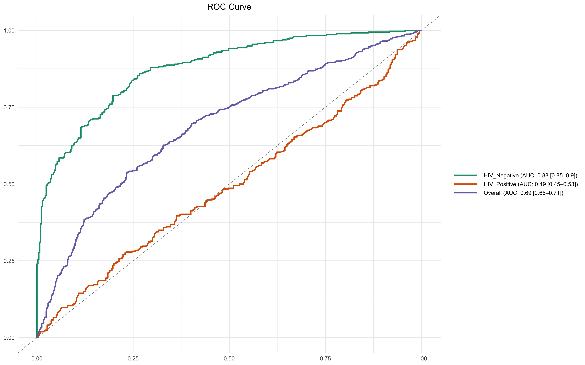

# Function to process raw Luminex assay data from a given file and return a tidy dataframe
luminex.process.data <- function(file, standards.file = "data/MOSDEF_Standard_Concs.csv") {
####### Load and clean Luminex data file #######
df <- read_csv(file, skip = 41, na = c("", "NA", "NaN"), show_col_types = FALSE) %>%
setNames(tolower(gsub("-", "_", names(.)))) %>% # Convert column names to lowercase and replace hyphens with underscores
mutate(sample = fct_na_value_to_level(sample)) %>% # Convert NA levels in 'sample' column to an explicit factor level
select_if(!names(.) %in% c('...17', 'location', 'total events')) # Drop unused or noisy columns
# Ensure CRP column exists even if missing
if (!'crp' %in% names(df)) df$crp <- NA
####### Assign unique IDs to samples #######
randomid <- function(n = 1) {
# Generates a random alphanumeric ID of the form 'ABCDE1234Z'
a <- do.call(paste0, replicate(5, sample(LETTERS, n, TRUE), FALSE))
paste0(a, sprintf("%04d", sample(9999, n, TRUE)), sample(LETTERS, n, TRUE))
}
####### Extract and reshape Net MFI values #######
MFI.medians <- df[1:(which(str_detect(string = df$sample, pattern = "Net MFI"))[1] - 1), ] %>%
mutate(test.id = randomid(n = nrow(.))) %>%
pivot_longer(cols = 2:14, names_to = "assay", values_to = "mfi") # Reshape to long format
####### Extract and reshape bead count values #######
MFI.counts <- df[
(which(str_detect(string = df$sample, pattern = "Count"))[1] + 2):
(which(str_detect(string = df$sample, pattern = "Avg Net MFI"))[1] - 1),
] %>%
pivot_longer(cols = 2:14, names_to = "assay", values_to = "bead.count") %>%
mutate(test.id = MFI.medians$test.id) # Align by test ID
####### Merge MFI and bead count data, clean and filter #######
df <- full_join(MFI.medians, MFI.counts) %>%
mutate(
mfi = as.numeric(as.character(mfi)), # Ensure MFI is numeric
bead.count = as.numeric(as.character(bead.count)) # Ensure bead count is numeric
) %>%
filter(
sample != "(Missing)", # Remove missing samples
bead.count > 15, # Minimum quality threshold for bead count
!is.na(mfi) # Remove rows with missing MFI values
)
####### Read and tidy standard concentrations #######
standards <- read_csv(standards.file, show_col_types = FALSE) %>%
pivot_longer(cols = S1:S8, names_to = "sample", values_to = "conc") %>%
mutate(
conc = as.numeric(
case_when(
unit == 'ng_ml' ~ conc * 1000, # Convert concentration to pg/mL if needed
TRUE ~ conc
)
),
assay = tolower(assay), # Normalise assay names
assay = gsub(x = assay, pattern = "-", replacement = "_") # Standardise naming
) %>%
dplyr::select(-unit) %>% # Drop unit column after conversion
mutate(class = "standard") # Tag as standard samples
####### Merge standards with assay data #######
df <- left_join(df, standards) # Add known concentrations to matching samples
df$class[is.na(df$class)] <- "specimen" # Tag unmatched rows as experimental specimens
####### Derive plate name from filename #######
plate <- str_replace(string = file, pattern = "data_in//", replacement = "") # Clean path
plate <- str_replace(string = plate, pattern = ".csv", replacement = "") # Remove extension
df$plate <- plate # Store plate label in output
return(df) # Return tidy, annotated dataset
}17 Data Analysis
17.1 Functions and tutorial for working with multiplexed immunoassay data
17.2 Introduction
This script processes and analyses Luminex immunoassay data to evaluate the predictive performance of multiple biomarkers. It begins with a quality-assured workflow that includes standardisation, background correction, and intra-/inter-plate normalisation. Raw MFI (median fluorescence intensity) values are log-transformed and fitted to 4-parameter logistic (4PL) models to derive concentration estimates from standard curves. The script implements automated checks for model convergence and excludes poor-quality fits where needed.
A suite of custom functions supports downstream analysis, including ROC curve generation (overall and subgroup-conditioned), PPV/NPV curve plotting, and confusion matrix-based statistics. The script outputs both tabular summaries and visual diagnostics to support biomarker evaluation, predictive threshold selection, and rule-based classification. It also includes exploratory and multivariate approaches such as feature selection, dimensionality reduction, and metamodel development.
Major analysis components:
Standard curve fitting using 4-parameter logistic models (4PL)
Converts raw MFI values to estimated concentrations for each biomarker on each plate.Quality assurance checks and log transformation
Removes background standards (e.g., S8), filters invalid values, and applies log10 transformation to MFI and concentration data.Normalisation of concentration values (z-scores)
Standardises biomarker concentrations within each analyte using z-transformation to allow plate-agnostic comparisons.Receiver Operating Characteristic (ROC) analysis
Assesses discriminatory ability of individual biomarkers via AUC, sensitivity, specificity, and confidence intervals.Stratified ROC plotting
Visualises ROC performance within subgroups (e.g., by viral-status or demographic category etc) to evaluate consistency.Predictive value curve plotting (PPV/NPV)
Examines clinical utility of biomarkers across decision thresholds using derived PPV and NPV.Confusion matrix analysis at arbitrary thresholds
Quantifies classification accuracy, sensitivity, specificity, PPV, NPV, and more based on rule-based cutoffs.Adjusted PPV estimation
Models a counterfactual scenario for high-risk inpatients using outpatient mortality to adjust apparent predictive value.Variable selection using Boruta
Ranks and selects relevant biomarkers using a random forest wrapper that tests importance against shadow features.Recursive Feature Elimination (RFE)
Iteratively removes less informative variables to identify minimal predictive sets optimised for classification.Principal Component Analysis (PCA)
Performs unsupervised dimensionality reduction to summarise structure in the data and explore separation of outcome groups.Confirmatory Generalised Linear Models (GLMs)
Tests combinations of selected biomarkers in multivariable logistic regression to evaluate adjusted predictive power.
Key functions:
luminex.process.data(): Imports raw Luminex CSV output, performs reshaping, and applies background correction and metadata integration.luminex_standard_curve_estimator(): Fits 4PL curves on each plate-assay pair; log-transforms MFI and concentration values; checks model fit.apply_luminex_standard_curve(): Iterates over all unique plate-assay combinations to estimate specimen concentrations.ROCit_plot(): Computes and plots ROC curves with bootstrapped AUC confidence intervals.ROCit_plot_conditioned(): Generates ROC curves stratified by subgroup (e.g. HIV Positive Vs HIV Negative).generate_roc_tables(): Produces AUC summaries across multiple biomarkers in tabular format.plot_ppv(): Plots PPV and NPV curves across thresholds to support classifier cut-off selection.compute_conf_matrix_stats(): Calculates classification metrics (e.g. sensitivity, specificity, PPV, NPV, accuracy) from binary rules.compute_adjusted_biomarker_stats(): Computes subgroup-specific performance metrics and adjusted PPV accounting for admission bias.
17.3 Libraries
Load the libraries used in this analysis and set a seed so that this is fully reproducible.
17.4 Define Functions
17.4.1 Function to Read and analyse Luminex Plates
This function imports and tidies raw Luminex assay data from one or more specified .csv file. It extracts and reshapes MFI and bead count data, assigns unique identifiers, filters out poor-quality measurements, and merges the assay data with known standard concentrations. The output is a clean, annotated dataframe ready for downstream quantification and analysis.
17.4.2 Function to draw ROC chart in ggplot
This function generates a receiver operating characteristic (ROC) curve from a given dataset, comparing a continuous biomarker score to a binary outcome (e.g. alive vs dead). It supports output as a ggplot2 figure or a tabulated set of performance metrics, and includes optional colour and style customisation.
####### Function to draw ROC chart in ggplot #######
ROCit_plot <- function(data, score_col, class_col, failcode = NULL, title = "ROC Curve",
negate_score = FALSE, lty = "solid", color = NULL, output = "chart") {
# Load required libraries
library(ggplot2) # Plotting system
library(dplyr) # Data manipulation
library(tibble) # Tidy tibble data frames
library(RColorBrewer) # Color palettes
library(ROCit) # ROC curve and AUC computation
# Use a colorblind-friendly palette if no color is provided
if (is.null(color)) {
colors <- brewer.pal(n = 8, "Dark2") # Load Dark2 palette
curve_color <- if (negate_score) colors[2] else colors[1] # Use different colors depending on score polarity
} else {
curve_color <- color # Use custom user-defined color
}
# Determine which class is considered the "positive" (i.e. fail) class
class_levels <- levels(factor(data[[class_col]])) # Get levels of classification variable
if (!is.null(failcode) && failcode %in% class_levels) {
pos_class <- failcode # Use user-defined failcode
} else {
pos_class <- class_levels[2] # Default to second level if not specified
}
# Convert class column to binary: 1 = positive class, 0 = negative
data$outcome_binary <- as.numeric(data[[class_col]] == pos_class)
# Conditionally negate scores (some metrics are inversely related to outcome)
score_values <- if (negate_score) -data[[score_col]] else data[[score_col]]
# Compute ROC curve object
rocit_obj <- rocit(score = score_values, class = data$outcome_binary)
# Calculate confidence intervals for AUC using bootstrapping
auc_ci <- ciAUC(rocit_obj, method = "bootstrap", boot.n = 1000)
# Extract AUC and its confidence intervals
auc_value <- as.numeric(rocit_obj$AUC)
auc_lower <- as.numeric(auc_ci$lower)
auc_upper <- as.numeric(auc_ci$upper)
# Count number of positive and negative samples
n_neg <- sum(data[[class_col]] != pos_class, na.rm = TRUE)
n_pos <- sum(data[[class_col]] == pos_class, na.rm = TRUE)
# Generate AUC label for display
auc_label <- if (is.na(auc_lower) | is.na(auc_upper)) {
paste0("AUC = ", round(auc_value, 2), " (CI: N/A)")
} else {
paste0("AUC = ", round(auc_value, 2), " (", round(auc_lower, 2), "–", round(auc_upper, 2), ")")
}
# Optionally return a summary table instead of a plot
if (output == "table") {
summary_table <- tibble(
Assay = score_col,
Outcome = class_col,
Failcode = pos_class,
AUC = round(auc_value, 2),
CI_Lower = round(auc_lower, 2),
CI_Upper = round(auc_upper, 2),
n_negative = n_neg,
n_positive = n_pos
)
return(summary_table)
} else if (output == "chart") {
# Build a tidy data frame for plotting
roc.curve <- tibble(
TPR = rocit_obj$TPR, # True Positive Rate (sensitivity)
FPR = rocit_obj$FPR # False Positive Rate (1 - specificity)
)
# Plot ROC curve using ggplot2
p <- ggplot(data = roc.curve, aes(x = FPR, y = TPR)) +
geom_line(color = curve_color, size = 1.2, linetype = lty) + # Draw ROC curve
geom_abline(intercept = 0, slope = 1, linetype = "dashed", color = "grey50") + # Diagonal reference line
annotate("text", x = 0.6, y = 0.05, label = auc_label, size = 4, fontface = "bold", color = "black") + # AUC annotation
labs(title = title, x = "False Positive Rate (1 - Specificity)", y = "True Positive Rate (Sensitivity)") +
theme_minimal(base_size = 14) # Clean, readable theme
return(p) # Return the ggplot object
} else {
stop("Invalid output option. Use 'chart' or 'table'.") # Handle incorrect output argument
}
}17.4.3 Function to generate ROC tables for multiple biomarkers
This function calculates ROC performance metrics (e.g. AUC, sensitivity, specificity) for a list of biomarkers against a binary outcome. It returns a tidy, combined table of ROC statistics for each biomarker, facilitating comparative evaluation and downstream reporting.
Accepts a list of biomarkers.
Applies
ROCit_plot(..., output = "table")to each one.Collects the AUC results and sample sizes into a single tidy tibble.
# Function to generate ROC summary tables for a list of biomarkers
generate_roc_tables <- function(data, biomarkers, class_col = "dead_or_alive") {
# Inner function that generates a ROC table for a single biomarker
generate_roc_table <- function(score_col) {
roc_result <- ROCit_plot(
data = data, # Dataset to be used
score_col = score_col, # Column containing predictor score (biomarker)
class_col = class_col, # Outcome column (default: "dead_or_alive")
output = "table" # Return summary table instead of plot
)
# Add biomarker name to the output for easier identification later
roc_result %>%
mutate(biomarker = score_col)
}
# Apply the ROC table function across all biomarkers and combine the results
roc_tables <- map_dfr(biomarkers, generate_roc_table)
# Return the complete ROC summary table
return(roc_tables)
}17.4.4 Function to generate a ROC curve conditioned on a variable
This function generates stratified ROC plots for a single biomarker, comparing performance across subgroups defined by a conditioning variable (e.g. inpatient vs outpatient). It computes ROC curves and AUC with confidence intervals for each subgroup and the overall population, and visualises them using a colourblind-friendly ggplot.
Plots ROC curves for a biomarker across different groups (e.g. male vs female).
Always includes an “Overall” curve for the full dataset.
Uses AUC with 95% CI to label each group.
Handles edge cases gracefully (e.g. skips groups with no variation in outcome).
The result is a single ggplot object showing comparative diagnostic performance.
# Function to draw ROC curves for a biomarker across different subgroups (e.g., by sex or age group)
ROCit_plot_conditioned <- function(data, score_col, class_col, title = "ROC Curve",
negate_score = FALSE, lty = "solid", color = NULL,
conditioning = NULL) {
# Load required libraries
library(ggplot2) # For plotting
library(dplyr) # For data manipulation
library(tidyr) # For reshaping data
library(RColorBrewer) # For colour palettes
library(ROCit) # For computing ROC and AUC
# If a conditioning variable is provided, exclude any rows where that variable is "indet"
if (!is.null(conditioning)) {
data <- filter(data, !!sym(conditioning) != "indet")
}
# Set up a colour palette (Dark2 is colourblind-friendly)
if (is.null(color)) {
colors <- brewer.pal(n = 8, "Dark2")
}
# This tibble will store all ROC curve data for plotting
roc_data <- tibble()
# Always compute an overall ROC curve (i.e., across all data)
data_list <- list(data) # Start with one list entry: all data
levels <- c("Overall") # Label this level as "Overall"
# If a conditioning variable is supplied (e.g. sex), add separate subsets for each group
if (!is.null(conditioning)) {
cond_levels <- unique(as.character(data[[conditioning]])) # Get unique levels
levels <- c("Overall", cond_levels) # Label groups for plot
# Create a list of data frames split by condition
data_list <- c(
list(data),
lapply(cond_levels, function(level) {
filter(data, !!sym(conditioning) == level)
})
)
}
# Loop over each subset (overall + each subgroup)
for (i in seq_along(data_list)) {
subset_data <- data_list[[i]]
# Skip this subset if it doesn't have at least two different outcome values
if (length(unique(subset_data[[class_col]])) < 2) {
message("Skipping level '", levels[i], "' because it has fewer than two unique values in '", class_col, "'.")
next
}
# Use negative scores if specified (useful when low scores indicate higher risk)
score_values <- if (negate_score) -subset_data[[score_col]] else subset_data[[score_col]]
# Compute ROC curve and AUC
rocit_obj <- rocit(score = score_values, class = subset_data[[class_col]])
auc_ci <- ciAUC(rocit_obj, method = "bootstrap", boot.n = 1000)
# Extract AUC and confidence intervals
auc_value <- as.numeric(rocit_obj$AUC)
auc_lower <- as.numeric(auc_ci$lower)
auc_upper <- as.numeric(auc_ci$upper)
# Add results to the plotting data frame with subgroup label and AUC
roc_data <- bind_rows(
roc_data,
tibble(
TPR = rocit_obj$TPR, # True Positive Rate
FPR = rocit_obj$FPR, # False Positive Rate
group = paste0(levels[i], " (AUC: ", round(auc_value, 2),
" [", round(auc_lower, 2), "–", round(auc_upper, 2), "])")
)
)
}
# Plot ROC curves for all groups
p <- ggplot(roc_data, aes(x = FPR, y = TPR, color = group)) +
geom_line(size = 1.2, linetype = lty) + # Main ROC curve
geom_abline(intercept = 0, slope = 1, linetype = "dashed", color = "grey50") + # Reference line
scale_color_manual(values = colors[1:length(unique(roc_data$group))]) + # Manual color assignment
labs(title = title, x = NULL, y = NULL, color = NULL) + # Minimal axis labels
theme_minimal(base_size = 14) + # Clean theme
theme(
legend.position = "right",
legend.key.width = unit(2, "cm"),
plot.title = element_text(hjust = 0.5) # Centered title
)
return(p) # Return the ggplot object
}17.4.5 Function to Estimate Luminex Standard Curve and Predict Concentrations for All Plates and Assays
This function fits a 4-parameter logistic (4PL) model to Luminex assay standard data for a specific plate and analyte. It uses this model to convert log-transformed MFI values into estimated concentrations for specimens, applying a lower bound to avoid extrapolation below the lowest standard.
Uses a subset of assay data from one plate to fit a 4-parameter logistic curve (4PL) relating MFI to known concentrations.
Then, it predicts log10 concentrations for unknown samples based on their MFI.
It avoids extrapolating below the lowest standard but allows extrapolation above the highest.
If model fitting fails (e.g. due to bad standards), it exits gracefully and returns the original data.
# Function to estimate specimen concentrations on a specific plate and assay using a 4-parameter logistic (4PL) standard curve
luminex_standard_curve_estimator <- function(data, test_plate, test_assay) {
# Step 1: Filter dataset for the selected plate and assay
x <- filter(data, plate == test_plate, assay == test_assay)
# Step 2: Extract the minimum and maximum standard concentrations
# These are used for bounds and interpretation, based on known standard samples
min_standard <- filter(x, class == "standard", sample == "S7") %>%
summarise(min_conc = min(conc, na.rm = TRUE)) %>%
pull(min_conc)
max_standard <- filter(x, class == "standard", sample == "S1") %>%
summarise(max_conc = max(conc, na.rm = TRUE)) %>%
pull(max_conc)
# Step 3: Transform both MFI and concentration to log10 scale
# This helps to linearise the central part of the 4PL curve
x <- x %>%
mutate(
log10_mfi = log10(mfi),
log10_conc = log10(conc)
) %>%
filter(sample != "S8") # Exclude the buffer-only blank sample (S8)
# Step 4: Split dataset into standard and specimen groups
x_standards <- x %>% filter(class == "standard", log10_mfi >= 0) # Keep only valid MFI values
x_samples <- x %>% filter(class != "standard", log10_mfi >= 0)
# Step 5: Fit a 4-parameter logistic (4PL) model using standard data
# This models the relationship between log10(MFI) and log10(concentration)
model1 <- tryCatch(
drm(log10_conc ~ log10_mfi,
fct = LL.4(names = c("Slope", "Lower", "Upper", "ED50")),
data = x_standards),
error = function(e) {
# Handle cases where the model fails to converge
message("4PL model fitting failed for plate: ", test_plate, " assay: ", test_assay)
return(NULL)
}
)
# Step 6: If model was successful, use it to estimate concentrations for specimens
if (!is.null(model1)) {
x <- x %>%
mutate(
Estimate = predict(model1, newdata = data.frame(log10_mfi = log10_mfi)),
# Apply a lower bound to predictions (avoid values below min standard)
# Upper bound is commented out – optionally enforce with: log10(max_standard)
Estimate = pmax(Estimate, log10(min_standard))
)
}
# Step 7: Return the augmented data frame (with estimates added if available)
return(x)
}17.4.6 Function to Apply Standard Curve Estimation Across All Plates and Assays
This function applies the luminex_standard_curve_estimator() across all unique plate–assay combinations in the dataset. It returns a single, combined dataframe with estimated concentrations for all analytes on all plates.
Looks at every unique plate and assay pair in your data.
Runs the 4PL model fitting and prediction for each one.
Returns a single, tidy dataframe where each row includes the original MFI and the estimated concentration (on a log10 scale).
# Function to apply the standard curve estimator across all plate-assay combinations in the dataset
apply_luminex_standard_curve <- function(data) {
# Step 1: Identify all unique combinations of plate and assay
# This assumes that each plate-assay pair has its own standard curve
unique_combinations <- distinct(data, plate, assay)
# Step 2: For each plate-assay combination, estimate concentrations using the luminex_standard_curve_estimator()
# - map2_dfr() applies the function across two parallel vectors (plate and assay)
# - .x refers to each plate, .y refers to each assay
# - _dfr binds all the results into a single dataframe row-wise
results <- map2_dfr(unique_combinations$plate, unique_combinations$assay,
~ luminex_standard_curve_estimator(data, .x, .y))
# Step 3: Return the combined results with estimated concentrations for all specimens
return(results)
}17.4.7 Function to plot Positive Predictive Values
This function generates a diagnostic curve showing how the Positive Predictive Value (PPV) and Negative Predictive Value (NPV) of a biomarker vary across different decision thresholds. It uses ROC-derived sensitivity and specificity to compute predictive values and visualises them with ggplot2.
Calculates and plots how PPV (positive predictive value) and NPV (negative predictive value) change across the full range of thresholds for a diagnostic test or biomarker.
It does this by first computing a ROC curve and then applying Bayes’ theorem to convert sensitivity/specificity and prevalence into predictive values.
The plot shows whether a test becomes more reliable at specific cut-offs, helping guide threshold selection in clinical or diagnostic settings.
# Function to plot Positive Predictive Value (PPV) and Negative Predictive Value (NPV) across all thresholds
plot_ppv <- function(data, outcome, marker, failcode = NULL, title = "Predictive Value Curve", colppv = "#000000", colnpv = "#982873") {
# Load necessary libraries
library(ggplot2) # For plotting
library(pROC) # For ROC curve calculation
# Step 1: Determine the "positive" class
# If a specific failcode is provided and found in the outcome, use it
# Otherwise, default to the second level of the factor as the positive class
if (!is.null(failcode) && failcode %in% levels(factor(data[[outcome]]))) {
pos_class <- failcode
} else {
pos_class <- levels(factor(data[[outcome]]))[2]
}
# Step 2: Convert outcome to binary: 1 = positive class, 0 = other
data$outcome_binary <- as.numeric(data[[outcome]] == pos_class)
# Step 3: Generate an ROC curve object
# pROC::roc() returns thresholds, sensitivities, and specificities
roc_obj <- roc(data$outcome_binary, data[[marker]], direction = "<")
# Step 4: Calculate prevalence (proportion of positive outcomes)
prevalence <- mean(data$outcome_binary)
# Step 5: Extract threshold-dependent sensitivity and specificity
thresholds <- roc_obj$thresholds
sensitivity <- roc_obj$sensitivities
specificity <- roc_obj$specificities
# Step 6: Calculate PPV and NPV at each threshold using Bayes' theorem
ppv <- (sensitivity * prevalence) / (sensitivity * prevalence + (1 - specificity) * (1 - prevalence))
npv <- (specificity * (1 - prevalence)) / (specificity * (1 - prevalence) + (1 - sensitivity) * prevalence)
# Step 7: Handle divide-by-zero cases by setting NaNs to NA
ppv[is.nan(ppv)] <- NA
npv[is.nan(npv)] <- NA
# Step 8: Combine data into a dataframe for plotting
roc_data <- data.frame(thresholds, ppv, npv)
# Step 9: Plot PPV and NPV curves over all thresholds
ggplot(roc_data, aes(x = thresholds)) +
geom_line(aes(y = ppv, color = colppv), size = 1.2) + # PPV line
geom_line(aes(y = npv, color = colnpv), size = 1.2) + # NPV line
labs(
title = title,
x = "Threshold",
y = "Predictive Value"
) +
theme(legend.position = "none") +
ylim(0, 1) # Clamp values to [0, 1] for interpretability
}17.4.8 Function to compute confusion matrix statistics
This function evaluates the diagnostic performance of a binary decision rule (e.g. marker > threshold) by computing a full confusion matrix and associated classification statistics including sensitivity, specificity, PPV, NPV, accuracy, balanced accuracy, and McNemar’s test p-value. It returns a tidy summary of these metrics for a given condition.
Takes a logical condition (like
marker > 10) and applies it to the dataset to create a synthetic prediction of who will die or survive.Compares those predictions to the actual outcome (
dead_or_alive) using a confusion matrix.Then, calculates a full set of diagnostic performance metrics like:
Sensitivity (recall)
Specificity
PPV / NPV
Accuracy and balanced accuracy
McNemar’s test p-value (checks symmetry in prediction errors)
Returns all of this in a tidy, easily interpreted tibble, making it useful for grid search or ROC threshold evaluation.
# Function to compute classification metrics based on a logical condition
# The condition is used to classify rows as "dead" or "alive" based on any biomarker or rule
# Returns a tidy summary of sensitivity, specificity, PPV, NPV, accuracy, and confusion matrix counts
compute_conf_matrix_stats <- function(data, condition, outcome_col = "dead_or_alive") {
# Load required libraries
library(dplyr) # For data manipulation
library(caret) # For confusionMatrix() and performance metrics
library(rlang) # For parsing string-based logical expressions
# Step 1: Apply the user-defined condition to classify predicted outcomes
# The string condition is parsed and evaluated row-wise
data <- data %>%
mutate(
synthetic_risk = case_when(
!!parse_expr(condition) ~ "Dead", # If the condition is TRUE, classify as "dead"
TRUE ~ "Alive" # Otherwise, classify as "alive"
)
)
# Step 2: Standardise factor levels to ensure they match for comparison
# This prevents errors when creating the confusion matrix
data <- data %>%
mutate(
synthetic_risk = factor(synthetic_risk, levels = c("Alive", "Dead")), # Predicted values
actual_outcome = factor(!!sym(outcome_col), levels = c("Alive", "Dead")) # Actual outcome
)
# Step 3: Create a 2x2 confusion matrix of predicted vs actual outcomes
# Rows = predicted values, columns = actual outcomes
conf_matrix <- table(data$synthetic_risk, data$actual_outcome)
# Step 4: Compute classification performance statistics using caret
# Includes sensitivity, specificity, PPV, NPV, accuracy, and McNemar’s test
cf <- confusionMatrix(conf_matrix, positive = "Dead") # Specify "dead" as the positive class
# Step 5: Extract metrics and return them in a tidy tibble
# This format is easy to combine, filter, or present in a table
tibble(
condition = condition, # The condition used to classify rows
PPV = cf$byClass["Pos Pred Value"], # Positive Predictive Value
NPV = cf$byClass["Neg Pred Value"], # Negative Predictive Value
sensitivity = cf$byClass["Sensitivity"], # True positive rate
specificity = cf$byClass["Specificity"], # True negative rate
accuracy = cf$overall["Accuracy"], # Overall correct classification rate
accuracylower = cf$overall["AccuracyLower"], # Lower bound of 95% CI for accuracy
accuracyupper = cf$overall["AccuracyUpper"], # Upper bound of 95% CI for accuracy
balancedaccuracy = cf$byClass["Balanced Accuracy"], # Mean of sensitivity and specificity
mcnemarp = cf$overall["McnemarPValue"], # McNemar’s test p-value for symmetry
true_neg = cf$table[1], # True negatives (pred = alive, actual = alive)
false_neg = cf$table[2], # False negatives (pred = alive, actual = dead)
false_pos = cf$table[3], # False positives (pred = dead, actual = alive)
true_pos = cf$table[4] # True positives (pred = dead, actual = dead)
)
}17.5 Plate Setup and data reading
17.5.1 Setup Plate data
This code loads and processes all raw Luminex assay .csv files from the data/luminex_files_zimbabwe/ directory:
File discovery:
list.files()identifies all files in the target folder with full paths.File processing: Each file is passed to the
luminex.process.data()function to extract and tidy the MFI and bead count data, merge in standard concentrations, and label metadata.Row binding: All resulting data frames are combined into a single
dfusingbind_rows().Plate labelling: The
platevariable is cleaned by removing the directory path prefix (data/luminex_files_zimbabwe//plate_).
c.files <- list.files("data/luminex_files_simulated//", full.names = TRUE)
df <- suppressMessages(bind_rows(lapply(c.files, function(x) luminex.process.data(file = x, standards.file = "data/MOSDEF_Standard_Concs.csv")))) %>%
mutate(plate = str_remove(plate,"data/luminex_files_zimbabwe//plate_"))17.5.2 Standards
The main purpose of the standards is to ensure that per-plate and per-assay, the standard curve specimens return MFI values that follow a dose-response curve.
Any assays where this isn’t the case should be removed, or at least adjusted for batch effects.
This requires a standards file to be provided (see MOSDEF_Standard_Concs.csv). It should look like the one below. Beware that the names of the assays and the names of the standards both need to match exactly to those in the data sets. Standard 8 is a background control (i.e. buffer blank). You could manually build this if you wanted to with the tibble command.
standards = read_csv("data/MOSDEF_Standard_Concs.csv",show_col_types = F)
kable(standards)| assay | unit | S1 | S2 | S3 | S4 | S5 | S6 | S7 | S8 |
|---|---|---|---|---|---|---|---|---|---|
| CRP | pg_ml | 10000 | 2500.0 | 625.000 | 156.25000 | 39.0625000 | 9.7656250 | 2.4414062 | 0 |
| sTREM1 | pg_ml | 10000 | 2500.0 | 625.000 | 156.25000 | 39.0625000 | 9.7656250 | 2.4414062 | 0 |
| Ang-2 | ng_ml | 100 | 25.0 | 6.250 | 1.56250 | 0.3906250 | 0.0976562 | 0.0244141 | 0 |
| Ang-1 | ng_ml | 50 | 12.5 | 3.125 | 0.78125 | 0.1953125 | 0.0488281 | 0.0122070 | 0 |
| sTNF-R1 | pg_ml | 2500 | 625.0 | 156.250 | 39.06250 | 9.7656250 | 2.4414062 | 0.6103516 | 0 |
| IL-6 | pg_ml | 10000 | 2500.0 | 625.000 | 156.25000 | 39.0625000 | 9.7656250 | 2.4414062 | 0 |
| TRAIL | pg_ml | 10000 | 2500.0 | 625.000 | 156.25000 | 39.0625000 | 9.7656250 | 2.4414062 | 0 |
| IL-10 | pg_ml | 4000 | 1000.0 | 250.000 | 62.50000 | 15.6250000 | 3.9062500 | 0.9765625 | 0 |
| Azu | ng_ml | 200 | 50.0 | 12.500 | 3.12500 | 0.7812500 | 0.1953125 | 0.0488281 | 0 |
| MxA | ng_ml | 300 | 75.0 | 18.750 | 4.68750 | 1.1718750 | 0.2929688 | 0.0732422 | 0 |
| IP-10 | pg_ml | 10000 | 2500.0 | 625.000 | 156.25000 | 39.0625000 | 9.7656250 | 2.4414062 | 0 |
| CH3L1 | ng_ml | 100 | 25.0 | 6.250 | 1.56250 | 0.3906250 | 0.0976562 | 0.0244141 | 0 |
| IL-8 | pg_ml | 2500 | 625.0 | 156.250 | 39.06250 | 9.7656250 | 2.4414062 | 0.6103516 | 0 |
rm(standards)This code chunk visualises the standard curves for each analyte across all plates to assess for potential batch effects:
Filtering: Extracts only rows classified as
"standard"from the full dataset (df).Plotting: For each analyte (
assay), plotslog(MFI)againstlog(concentration)to visualise the relationship.Faceting: Uses
facet_wrap()to create separate panels per analyte, allowing comparison across assays.Purpose: Helps identify inconsistencies, nonlinearities, or batch variation in standard performance across plates before model fitting.
standards<-df %>% filter(class=="standard")
# Visualise standards to assess batch effects
ggplot(standards,aes(log(conc),log(mfi)))+geom_point()+geom_smooth()+facet_wrap(.~assay,scales = "free")In this example there appears to be some kind of batch effect in the MxA assay, which leads to two distinct curves. This can be plotted by individual plates in numerical series to see what is going on.
17.5.3 Plate-Level MFI Distribution by Assay
This plot is used to assess measurement consistency and detect plate-specific anomalies:
Input data: Uses the full dataset
df, including both specimen and standard samples.Axes:
x = plate: Each plate (from file name) on the x-axis.y = log(mfi): Log-transformed median fluorescence intensity.
Color: Points are colored by
class(i.e.,standardorspecimen).Faceting: A separate panel is drawn for each
assay, allowing per-analyte inspection.Point styling: Uses small, semi-transparent dots to make dense plots readable.
Purpose:
Quick visual QC for MFI ranges across plates and analytes. Useful for spotting:
Drifts or jumps between plates,
Assays with unusually high/low values,
Missing or outlier readings.
ggplot(df,aes(plate,log(mfi),col=class))+geom_point(size=0.5,alpha=0.5)+facet_wrap(.~assay)Each column shows the raw data from a single plate, and here we can see that non-alignment of the standards (blue dots) suggests a batch effect (i.e. a batch of beads with overall lower fluorescence) in several of the assays – but most obviously in MxA.
Batch effects can be corrected for (to some degree) by normalisation.
17.5.4 Application of Standard Curve to Convert MFI to Concentration
This line applies the 4-parameter logistic (4PL) model to convert median fluorescence intensity (MFI) readings into estimated analyte concentrations:
What it does:
Calls
apply_luminex_standard_curve(), which:Identifies unique
(plate, assay)combinations.For each combination, invokes
luminex_standard_curve_estimator()to:Fit a 4PL model using the known standard concentrations.
Predict concentrations for specimens using the fitted curve.
Apply a log10 transformation and a floor limit (based on the lowest standard).
Combines all modelled data back into a unified, tidy dataframe.
Output:
- The returned
dfincludes a new columnEstimate, which contains the log10-transformed concentration estimates for valid, non-background specimens.
df<-apply_luminex_standard_curve(df)17.5.5 Visualisation of Fitted Concentration Estimates Across Plates
This plot shows how the estimated concentrations (from 4PL standard curve fitting) vary by assay and plate:
Purpose:
To assess consistency of the estimated concentrations (
Estimate) across assay plates.To detect batch effects or anomalies in specimen or standard behaviour.
Helps verify that the 4PL fitting worked as intended and is not introducing systematic bias between plates or assays.
This is an important QA diagnostic step to ensure validity and comparability before downstream analysis.
ggplot(df,aes(plate,Estimate,col=class))+geom_point(size=0.5,alpha=0.5)+facet_wrap(.~assay)17.5.6 Remove Standards Before Further Analysis
Purpose: Ensures only experimental (specimen) data are retained for analysis.
Why: Standard samples are reference/control values used during calibration and plate-wise normalisation steps (above) and should not be included in the z-score step, which is meant to scale specimens only.
df<-df %>% filter(
class != "standard" # Remove standards before normalization
)
rm(standards)17.5.7 Pivot Data to wide format
This code reshapes your Luminex data into a wide format, suitable for multivariate analyses.
df_wider <- df %>%
pivot_wider(id_cols = c(sample,test.id),names_from = assay,values_from = Estimate
)17.5.8 Normalise scores for modelling purposes
This step normalises each biomarker using z-score transformation, which centers the data (mean = 0) and scales it (SD = 1).
What This Does:
Applies
scale()to each biomarker:Subtracts the mean
Divides by the standard deviation
Adds new variables (e.g.
ang_1_z,il_6_z) representing standardised biomarker values.
Why It’s Important:
Removes differences in scale across biomarkers.
Essential for:
PCA
Clustering
Regression and classifiers (especially distance-based models)
Fair visual comparisons
df_wider <- df_wider %>%
mutate(
ang_1_z = scale(ang_1)[,1],
ang_2_z = scale(ang_2)[,1],
azu_z = scale(azu)[,1],
ch3l1_z = scale(ch3l1)[,1],
il_10_z = scale(il_10)[,1],
il_6_z = scale(il_6)[,1],
il_8_z = scale(il_8)[,1],
ip_10_z = scale(ip_10)[,1],
mxa_z = scale(mxa)[,1],
stnf_r1_z = scale(stnf_r1)[,1],
strem1_z = scale(strem1)[,1],
trail_z = scale(trail)[,1]
)17.6 Create some dummy clinical data for analysis
This block of code generates a simulated outcome variable (dead_or_alive) for testing classification models, using biomarker and HIV status information. This simulates a plausible binary outcome (Alive vs Dead) based on il_8_z (Strong association), MxA (Moderate``association``) and CH3L1 (Moderate``association``) values and a synthetic HIV status (hiv_comb), for downstream ROC and predictive analyses.
Adds a randomly assigned HIV status to each sample (
HIV_NegativeorHIV_Positive), uniformly distributed.Creates a death probability (
death_prob) for each individual:For HIV-negative, death probability increases sharply with
il_8_z(logistic function).For HIV-positive, death probability is flat at 0.5 (i.e., no biomarker effect).
Simulates the actual outcome:
Uses
runif(n()) < death_probto probabilistically assign “Dead” or “Alive”.Forces factor levels to be
c("Alive", "Dead")so that ROC calculations interpret “Dead” as the positive class.
set.seed(123)
df_wider <- df_wider %>%
mutate(
hiv_comb = as_factor(sample(c("HIV_Negative", "HIV_Positive"),
size = n(), replace = TRUE))
) %>%
mutate(
death_prob = case_when(
# Strong nonlinear IL-8 effect for HIV-negative, plus moderate effects from MxA and CH3L1
hiv_comb == "HIV_Negative" ~ plogis(3 * il_8_z + 1.0 * mxa_z + 0.6 * ch3l1_z),
# No IL-8 effect for HIV-positive, but keep moderate effects from MxA and CH3L1
hiv_comb == "HIV_Positive" ~ plogis(0 + 1.0 * mxa_z + 0.6 * ch3l1_z)
),
dead_or_alive = factor(
ifelse(runif(n()) < death_prob, "Dead", "Alive"),
levels = c("Alive", "Dead") # ensure ROCit uses "Dead" as positive class
)
)17.7 Example Analyses
17.7.1 ROC Analysis
This line of code plots a Receiver Operating Characteristic (ROC) curve for the IL-8 biomarker against the binary outcome dead_or_alive, using the custom ROCit_plot() function.
Evaluates how well IL-8 predicts mortality.
Displays a ROC curve and associated AUC.
Visualises the trade-off between sensitivity and specificity at different thresholds.
ROCit_plot(data=df_wider,score_col = "il_8",class_col = "dead_or_alive",color = "#000000")+ggtitle("IL-8")17.7.2 ROC Analysis of more than one marker using patchwork
This section compares the performance of IL-8 and IL-10 as mortality predictors using side-by-side ROC plots. By plotting the z-score normalised values, it enables direct visual comparison of biomarkers on the same scale, regardless of their original measurement units or dynamic ranges. This standardisation supports fair interpretation of relative predictive power across different analytes.
ROCit_plot(data=df_wider,score_col = "il_8_z",class_col = "dead_or_alive",color = "#000000")+ggtitle("IL-8") +
ROCit_plot(data=df_wider,score_col = "ch3l1_z",class_col = "dead_or_alive",color = "#000000")+ggtitle("CH3L1") +
ROCit_plot(data=df_wider,score_col = "mxa_z",class_col = "dead_or_alive",color = "#000000")+ggtitle("MxA") +
ROCit_plot(data=df_wider,score_col = "il_10_z",class_col = "dead_or_alive",color = "#000000")+ggtitle("IL-10") 17.7.3 ROC Table
This code block computes and displays a table of ROC statistics for one or more biomarkers — IL-8 and IL-10, using their z-score normalised values. Here’s a breakdown:
Function call:
generate_roc_tables()runs ROC analysis on each biomarker and returns a table with AUC, sensitivity, specificity, and thresholds.Biomarkers:
"il_8_z"and"il_10_z"are included in this example, but you can add more to the list ofbiomarkersin the function call.Sorting: Results are ordered by descending AUC to highlight the stronger predictor.
Annotation: A new column
Class_Variable = "Overall"is added to label this as the non-stratified (overall) analysis. You can modify this if you’re doing complicated sub-analyses.
roc_tables_overall <- generate_roc_tables(data = df_wider, biomarkers = c("il_8_z","ch3l1_z","mxa_z","il_10_z"))%>%
arrange(-AUC) %>%
mutate(Class_Variable = "Overall")
kable(roc_tables_overall)| Assay | Outcome | Failcode | AUC | CI_Lower | CI_Upper | n_negative | n_positive | biomarker | Class_Variable |
|---|---|---|---|---|---|---|---|---|---|
| il_8_z | dead_or_alive | Dead | 0.69 | 0.66 | 0.71 | 800 | 720 | il_8_z | Overall |
| mxa_z | dead_or_alive | Dead | 0.64 | 0.61 | 0.67 | 800 | 720 | mxa_z | Overall |
| ch3l1_z | dead_or_alive | Dead | 0.63 | 0.60 | 0.66 | 800 | 720 | ch3l1_z | Overall |
| il_10_z | dead_or_alive | Dead | 0.48 | 0.45 | 0.51 | 800 | 720 | il_10_z | Overall |
17.7.4 ROC analysis, conditioned by another variable
This line generates stratified ROC plots for the biomarker IL-8 (z-score), conditioned on HIV status.
ROCit_plot_conditioned()is used to create separate ROC curves by subgroup.score_col = "il_8_z": The z-score normalised IL-8 biomarker is the predictor.class_col = "dead_or_alive": The binary outcome variable (Alive/Dead).conditioning = "hiv_comb": ROC curves are generated separately for HIV_Negative and HIV_Positive groups.
Stratification reveals whether a biomarker performs differently in subgroups. Using z-scores allows meaningful comparison across subgroups by standardising the measurement scale.
ROCit_plot_conditioned(df_wider,score_col = "il_8_z",class_col = "dead_or_alive",conditioning = "hiv_comb")
17.7.5 Metamodel
A logistic regression model (meta_model_full) is fitted to predict mortality (dead_or_alive) using:
12 z-score standardised biomarkers (e.g.,
il_8_z,il_10_z,trail_z)HIV status (
hiv_comb)
This multivariable model estimates the log-odds of death for each one standard deviation increase in biomarker concentration, controlling for HIV status.
By using z-scores:
Coefficients are directly comparable across biomarkers (this is crucially important!)
Effect sizes are interpretable as change in risk per SD increase.
This analysis helps identify which biomarkers contribute most independently to predicting mortality.
meta_model_full <- glm(factor(dead_or_alive) ~ ang_1_z + ang_2_z + azu_z + ch3l1_z + il_10_z + il_6_z + il_8_z + ip_10_z + mxa_z + stnf_r1_z + strem1_z + trail_z + hiv_comb,
data = df_wider, family = binomial, na.action = na.exclude)
summary(meta_model_full)
Call:
glm(formula = factor(dead_or_alive) ~ ang_1_z + ang_2_z + azu_z +
ch3l1_z + il_10_z + il_6_z + il_8_z + ip_10_z + mxa_z + stnf_r1_z +
strem1_z + trail_z + hiv_comb, family = binomial, data = df_wider,
na.action = na.exclude)
Coefficients:
Estimate Std. Error z value Pr(>|z|)
(Intercept) -0.172417 0.082490 -2.090 0.0366 *
ang_1_z -0.093873 0.059177 -1.586 0.1127
ang_2_z 0.060401 0.060984 0.990 0.3220
azu_z -0.041166 0.058395 -0.705 0.4808
ch3l1_z 0.536474 0.064624 8.301 <2e-16 ***
il_10_z 0.009881 0.060369 0.164 0.8700
il_6_z 0.001440 0.059054 0.024 0.9805
il_8_z 0.853895 0.068121 12.535 <2e-16 ***
ip_10_z 0.028781 0.058821 0.489 0.6246
mxa_z 0.674302 0.066969 10.069 <2e-16 ***
stnf_r1_z 0.017600 0.059680 0.295 0.7681
strem1_z -0.126021 0.061325 -2.055 0.0399 *
trail_z 0.001614 0.058715 0.027 0.9781
hiv_combHIV_Positive 0.161612 0.117706 1.373 0.1697
---
Signif. codes: 0 '***' 0.001 '**' 0.01 '*' 0.05 '.' 0.1 ' ' 1
(Dispersion parameter for binomial family taken to be 1)
Null deviance: 2103.0 on 1519 degrees of freedom
Residual deviance: 1724.5 on 1506 degrees of freedom
AIC: 1752.5
Number of Fisher Scoring iterations: 417.7.6 Interaction Model: Biomarkers × HIV Status
A logistic regression model is fitted to explore whether the effects of important biomarkers on mortality differ by HIV status. This tests if the prognostic value of biomarkers changes depending on whether a person is HIV-positive or HIV-negative. Significant interaction terms indicate that HIV status modifies the effect of the biomarker on mortality.
This includes:
Main effects of
mxa_z,il_8_z, andhiv_combInteraction terms:
mxa_z:hiv_combil_8_z:hiv_comb
meta_model_marker_int_hiv <- glm(factor(dead_or_alive) ~
mxa_z * hiv_comb+
il_8_z * hiv_comb+
ch3l1_z * hiv_comb ,
family = binomial, data = df_wider, na.action = na.exclude)
summary(meta_model_marker_int_hiv)
Call:
glm(formula = factor(dead_or_alive) ~ mxa_z * hiv_comb + il_8_z *
hiv_comb + ch3l1_z * hiv_comb, family = binomial, data = df_wider,
na.action = na.exclude)
Coefficients:
Estimate Std. Error z value Pr(>|z|)
(Intercept) 0.02702 0.10646 0.254 0.799625
mxa_z 0.88036 0.11333 7.768 7.98e-15 ***
hiv_combHIV_Positive -0.02690 0.13606 -0.198 0.843293
il_8_z 2.73653 0.19932 13.729 < 2e-16 ***
ch3l1_z 0.41338 0.10846 3.811 0.000138 ***
mxa_z:hiv_combHIV_Positive 0.01381 0.15396 0.090 0.928531
hiv_combHIV_Positive:il_8_z -2.71450 0.21513 -12.618 < 2e-16 ***
hiv_combHIV_Positive:ch3l1_z 0.34541 0.14589 2.368 0.017899 *
---
Signif. codes: 0 '***' 0.001 '**' 0.01 '*' 0.05 '.' 0.1 ' ' 1
(Dispersion parameter for binomial family taken to be 1)
Null deviance: 2103.0 on 1519 degrees of freedom
Residual deviance: 1446.3 on 1512 degrees of freedom
AIC: 1462.3
Number of Fisher Scoring iterations: 6The substantial drop in AIC from 1752 (without interaction) to 1462 (with interaction) suggests that including HIV interaction terms greatly improves the model fit and better explains the variance in the data.
Interpretation:
Lower AIC indicates a better-fitting model, penalised for complexity.
A decrease of >10 is generally considered strong evidence in favour of the more complex model.
Here, the reduction of around 300 points is very strong evidence that:
The prognostic effects of IL-8 and MXA differ significantly by HIV status.
This supports including interaction terms in subsequent modelling or stratified analyses.
17.7.7 PPV/NPV charts
This code block generates Positive Predictive Value (PPV) and Negative Predictive Value (NPV) curves for the biomarker IL-8 across three groups, using plot_ppv() and combining the outputs with patchwork.
These plots allow visual comparison of diagnostic utility (PPV and NPV across thresholds) of IL-8:
In the full population
Stratified by HIV status
By conditioning on HIV, the analysis highlights whether predictive value changes by subgroup, supporting the interaction findings in the logistic models.
plot_ppv(df_wider, "dead_or_alive", "il_8_z", title = "IL-8",failcode = "Dead")+
plot_ppv(filter(df_wider,hiv_comb=="HIV_Positive"), "dead_or_alive", "il_8_z", title = "IL-8 (HIV Positive)",failcode = "Dead")+
plot_ppv(filter(df_wider,hiv_comb=="HIV_Negative"), "dead_or_alive", "il_8_z", title = "IL-8 (HIV Negative)",failcode = "Dead")It’s clear in this simulation that HIV status is a very important factor with relation to the diagnostic utility of IL-8.
17.7.8 Calculate confusion Matrix based on a chosen threshold
This line of code runs a confusion matrix analysis for the subset of participants who are HIV-negative, using a decision rule based on the PPV/NPV data for the IL-8 z-score
Filters the data to include only HIV-negative individuals.
Applies the rule:
il_8_z > 0.2→ Predicts “dead”, otherwise “alive”.Creates a synthetic classification variable (
synthetic_risk) from that rule.Compares predictions to actual outcomes (
dead_or_alive) using a confusion matrix.Returns a tibble of metrics:
Sensitivity, Specificity
Positive Predictive Value (PPV), Negative Predictive Value (NPV)
Accuracy and confidence bounds
McNemar’s test p-value
True/false positive and negative counts
This lets you quantify performance of a rule-based classifier at a specific threshold, which complements the continuous-threshold analyses like ROC and PPV curves.
kable(compute_conf_matrix_stats(data = filter(df_wider,hiv_comb=="HIV_Negative"),condition = "il_8_z>0.2",outcome_col = "dead_or_alive"),digits = 2)| condition | PPV | NPV | sensitivity | specificity | accuracy | accuracylower | accuracyupper | balancedaccuracy | mcnemarp | true_neg | false_neg | false_pos | true_pos |
|---|---|---|---|---|---|---|---|---|---|---|---|---|---|
| il_8_z>0.2 | 0.83 | 0.75 | 0.65 | 0.89 | 0.78 | 0.75 | 0.81 | 0.77 | 0 | 374 | 46 | 124 | 230 |
17.8 Identifying clusters via Principal Components Analysis
This section conducts a Principal Component Analysis (PCA) on the z-scored biomarker panel to explore the underlying structure of the data. It evaluates how much of the overall variation is captured by each principal component and assesses the potential for dimensionality reduction. While all biomarkers were already standardised, PCA was applied with additional scaling for consistency. The output provides insight into the dominant patterns across biomarkers and helps inform multivariate modelling strategies.
First we will normalise all the assays using the median method. In the real world we might want to test this first for each assay as shown above. The summary shows how much of the total variance can be explained by the various principal components.
df.pca<-prcomp(dplyr::select(df_wider,ang_1_z:trail_z),scale. = T)
df.pca.summary<-summary(df.pca)
df.pca.summaryImportance of components:
PC1 PC2 PC3 PC4 PC5 PC6 PC7
Standard deviation 1.2912 1.04619 1.02966 1.01153 1.00482 0.97864 0.96362
Proportion of Variance 0.1389 0.09121 0.08835 0.08527 0.08414 0.07981 0.07738
Cumulative Proportion 0.1389 0.23013 0.31848 0.40375 0.48789 0.56770 0.64508
PC8 PC9 PC10 PC11 PC12
Standard deviation 0.94969 0.93327 0.92116 0.91541 0.89422
Proportion of Variance 0.07516 0.07258 0.07071 0.06983 0.06664
Cumulative Proportion 0.72024 0.79282 0.86353 0.93336 1.00000This can be visualised by plotting:
Proportion of variance explained by each principal component (PC), showing how much unique information each PC contributes.
Cumulative variance explained, helping to assess how many components are needed to retain most of the dataset’s variability.
Together, these plots inform decisions on dimensionality reduction—e.g., whether a smaller number of components could summarise the variance of the biomarker panel effectively.
df.importance<-tibble(pc = 1:length(df.pca.summary$importance[1,]),
standard.deviation = df.pca.summary$importance[1,],
prop.of.variance = df.pca.summary$importance[2,],
cumulative.variance = df.pca.summary$importance[3,]
)
ggplot(df.importance,aes(pc,prop.of.variance))+geom_bar(stat="identity") +
ggplot(df.importance,aes(pc,cumulative.variance))+geom_bar(stat="identity")It looks like only a little of the variance (~15%) is explained by the first principal component. This is probably unsurprising given that the data are simulated and don’t have any real patterns encoded. Further analysis can be made easier by adding the PC data back to the main data.
df_wider<- bind_cols(df_wider,as.data.frame(df.pca$x))This PCA biplot shows the distribution of specimens across the first two principal components (PC1 and PC2), with points coloured and shaped by outcome (dead_or_alive).
PC1 explains 13.9% and PC2 explains 9% of the total variance, together capturing just 23% (See above)
Each point represents a specimen based on its transformed cytokine profile (z-scores).
Ellipses represent the 95% confidence regions for each class.
There is substantial overlap between the alive and dead groups, though some separation is visible along both PC1, suggesting mild discriminatory power from the composite cytokine signature.
This view complements the univariate analyses by illustrating how cytokine expression patterns cluster across outcome groups in multivariate space.
ggplot(df_wider,aes(PC1,PC2,color=dead_or_alive,label=sample,pch=dead_or_alive))+
geom_point(alpha=0.4,size=1) +
stat_ellipse(geom="polygon", aes(fill = dead_or_alive), alpha = 0.2, show.legend = FALSE, level = 0.95)+
xlab(label = str_c("PC1 (",round(100*df.importance$prop.of.variance[1],2)," %)",sep = ""))+
ylab(label = str_c("PC2 (",round(100*df.importance$prop.of.variance[2],2)," %)",sep = ""))+
theme(aspect.ratio=df.importance$prop.of.variance[2]/df.importance$prop.of.variance[1],
legend.position = "bottom"
)17.8.1 Linear Regression to identify prognostic Principal Components
A logistic regression can be fitted using the first 12 principal components (PC1–PC12) as predictors of mortality (dead_or_alive), aiming to identify components carrying diagnostic or prognostic signal.
summary(
glm(data = df_wider,formula = dead_or_alive ~ PC1+PC2+PC3+PC4+PC5+PC6+PC7+PC8+PC9+PC10+PC11+PC12,family = "binomial")
)
Call:
glm(formula = dead_or_alive ~ PC1 + PC2 + PC3 + PC4 + PC5 + PC6 +
PC7 + PC8 + PC9 + PC10 + PC11 + PC12, family = "binomial",
data = df_wider)
Coefficients:
Estimate Std. Error z value Pr(>|z|)
(Intercept) -0.093126 0.058758 -1.585 0.11299
PC1 0.244995 0.046261 5.296 1.18e-07 ***
PC2 -0.663058 0.062068 -10.683 < 2e-16 ***
PC3 0.139522 0.057400 2.431 0.01507 *
PC4 0.256308 0.058335 4.394 1.11e-05 ***
PC5 -0.332554 0.059151 -5.622 1.89e-08 ***
PC6 -0.721157 0.065909 -10.942 < 2e-16 ***
PC7 0.002681 0.061186 0.044 0.96506
PC8 -0.014150 0.062224 -0.227 0.82012
PC9 -0.174818 0.063749 -2.742 0.00610 **
PC10 0.037276 0.063781 0.584 0.55892
PC11 -0.207031 0.065107 -3.180 0.00147 **
PC12 -0.452560 0.068142 -6.641 3.11e-11 ***
---
Signif. codes: 0 '***' 0.001 '**' 0.01 '*' 0.05 '.' 0.1 ' ' 1
(Dispersion parameter for binomial family taken to be 1)
Null deviance: 2103.0 on 1519 degrees of freedom
Residual deviance: 1726.4 on 1507 degrees of freedom
AIC: 1752.4
Number of Fisher Scoring iterations: 4Model findings:
The model explains substantial variation in the outcome (AIC = 2827.1, reduced from the null model’s 3100.8).
Statistically significant PCs:
- PC1, PC2, PC4, PC5, PC6 and PC12 showed significant associations (p < 1e-5).
Most influential components:
- PC2 and PC6 show strong negative associations, potentially identifying protective biomarkers
ggplot(df_wider,aes(PC2,PC6,color=dead_or_alive,label=sample,pch=dead_or_alive))+
geom_point(alpha=0.4,size=1) +
stat_ellipse(geom="polygon", aes(fill = dead_or_alive), alpha = 0.2, show.legend = FALSE, level = 0.95)+
xlab(label = str_c("PC2 (",round(100*df.importance$prop.of.variance[2],2)," %)",sep = ""))+
ylab(label = str_c("PC6 (",round(100*df.importance$prop.of.variance[6],2)," %)",sep = ""))+
theme(aspect.ratio=df.importance$prop.of.variance[2]/df.importance$prop.of.variance[1],
legend.position = "bottom"
)These results suggest that multiple PCs contain diagnostically useful signal, and that unsupervised dimensionality reduction preserves meaningful information relevant to mortality classification.
17.8.2 Interpreting PCs with loadings plots
To understand what each principal component represents, loadings plots are generated. These show how strongly each original biomarker contributes to a given principal component.
PC1 Loadings: This component captures the dominant pattern of variance across the biomarker panel. Large positive or negative loadings indicate biomarkers that are highly correlated with this axis.
PC4 Loadings: Although less dominant in variance explained, PC4 was strongly associated with mortality in the regression model. Loadings for PC4 help identify which specific biomarkers drive this mortality-associated axis.
By plotting the rotation matrix (PCA loadings), we visually inspect which biomarkers are most influential in each component. This guides interpretation of biological or diagnostic relevance.
df.pca %>%
tidy(matrix = "rotation") %>%
filter(PC=="2" | PC=="6" ) %>%
ggplot(aes(column,value)) +
geom_bar(stat="identity")+
facet_grid(PC~.)+
coord_flip()The bars pointing left or right show the relative contribution of that biomarker to either the positive (rightward) or negative (leftward) values of the PC.
Important to remember that PCA space you can flip the axis 180° without changing the underlying geometry, so “positive” vs “negative” loadings don’t carry any inherent meaning. What matters are the relative magnitudes of the loadings and the pattern of which variables move together or in opposition, not whether they’re plotted above or below zero.
Remember that this is a simulated data set, so these patterns are also not real.
17.8.3 ROC analysis of PC associations with outcomes
You can also use PCs as the input to a ROC analysis.
In this case, a multi-marker test fails to improve on a single marker test - Again please remember that this is a simulated clinical data set.
ROCit_plot(data=df_wider,score_col = "PC1",class_col = "dead_or_alive",color = "#000000")+ggtitle("PC1") +
ROCit_plot(data=df_wider,score_col = "PC4",class_col = "dead_or_alive",color = "#000000")+ggtitle("PC4") +
ROCit_plot(data=df_wider,score_col = "PC8",class_col = "dead_or_alive",color = "#000000")+ggtitle("PC8") +
ROCit_plot(data=df_wider,score_col = "PC5",class_col = "dead_or_alive",color = "#000000",negate_score = T)+ggtitle("PC5") +
ROCit_plot(data=df_wider,score_col = "PC9",class_col = "dead_or_alive",color = "#000000",negate_score = T)+ggtitle("PC9") +
ROCit_plot(data=df_wider,score_col = "PC11",class_col = "dead_or_alive",color = "#000000")+ggtitle("PC11")17.8.4 Mahalanobis Distance for Outlier Detection or Risk Scoring
This approach explores profile-wide variance in the PCA space to identify individuals whose overall biomarker profile deviates from the “normal” (control) pattern.
We compute a Mahalanobis distance for each sample, quantifying how far its position in PCA space lies from the centroid of the “Alive” group (i.e., survivors). This reflects multivariate deviation across all principal components.
17.8.4.1 Method:
Controls: Used only the
Alivegroup to compute:The centroid (mean vector of PCs).
The covariance matrix of PCs.
All samples: Computed Mahalanobis distance from that centroid using:
\[D^2 = (x - \mu)^\top \Sigma^{-1} (x - \mu)\]
where:
x is the PC vector for an individual sample,
μ is the control (Alive) group mean vector
Σ is the covariance matrix of controls.
This can now act as a multivariate anomaly score, potentially highlighting high-risk profiles.
# Compute covariance matrix of controls
control_pca <- df_wider %>%
filter(dead_or_alive == "Alive") %>%
select(starts_with("PC"))
cov_matrix <- cov(control_pca, use = "complete.obs")
# Compute Mahalanobis distance from control centroid
df_wider <- df_wider %>%
mutate(mahalanobis_distance = mahalanobis(select(., starts_with("PC")), colMeans(control_pca, na.rm = TRUE), cov_matrix))
ggplot(df_wider, aes(x = log(mahalanobis_distance), fill = dead_or_alive)) +
geom_density(alpha = 0.5) +
ggtitle("Distance from Control Centroid in PCA Space")To assess its predictive utility, you might plot a ROC curve
ROCit_plot(data=df_wider,score_col = "mahalanobis_distance",class_col = "dead_or_alive",color = "#000000")+ggtitle("mahalanobis_distance")and also fit a logistic regression
summary(glm(dead_or_alive ~ log(mahalanobis_distance), data = df_wider, family = "binomial"))
Call:
glm(formula = dead_or_alive ~ log(mahalanobis_distance), family = "binomial",
data = df_wider)
Coefficients:
Estimate Std. Error z value Pr(>|z|)
(Intercept) -2.02252 0.23384 -8.649 <2e-16 ***
log(mahalanobis_distance) 0.78761 0.09354 8.420 <2e-16 ***
---
Signif. codes: 0 '***' 0.001 '**' 0.01 '*' 0.05 '.' 0.1 ' ' 1
(Dispersion parameter for binomial family taken to be 1)
Null deviance: 2103.0 on 1519 degrees of freedom
Residual deviance: 2025.9 on 1518 degrees of freedom
AIC: 2029.9
Number of Fisher Scoring iterations: 417.9 Marker Importance and Selection
So far, we’ve explored both individual biomarker effects and composite multivariate structures (e.g. via PCA and Mahalanobis distance) for predicting mortality. While informative, these approaches do not explicitly rank biomarkers by their predictive relevance.
To refine the model and move toward a parsimonious and interpretable diagnostic signature, we next assess:
Which markers contribute most to predictive performance?
Which subset of markers can be used without sacrificing accuracy?
This step focuses on feature importance and selection, key concepts in diagnostic biomarker development and model generalisation.
17.9.1 Variable Selection
The justification for a variable selection approach is that it:
Reduces overfitting and improves generalisability
Lowers cost and complexity for downstream assays
Enhances interpretability and potential biological insight
17.9.2 Approaches Used for variable selection
We apply two complementary techniques:
17.9.2.1 1. Boruta Feature Selection
A wrapper algorithm built around random forests.
Compares original variables to their permuted (shadow) counterparts.
Retains variables that show consistently higher importance than the best random feature.
Well suited for highly-dimensional and noisy data.
17.9.2.2 2. Recursive Feature Elimination (RFE)
A greedy backward selection method.
Iteratively removes the least important features based on model weight (e.g., in logistic regression or random forest).
Efficient in identifying a minimal optimal feature subset.
17.9.3 Enhancing Clinical Relevance: Adding Demographic and Clinical Variables
To reflect more practical diagnostic settings, we extended the dataset to include additional demographic and clinical predictors:
| Variable | Description |
|---|---|
sex |
Randomly assigned binary variable (Male/Female), ~50:50 split |
age |
Uniformly distributed between 18 and 87 |
temp |
Simulated body temperature, slightly elevated in patients who died |
respiratory_rate |
Skewed towards higher values in the Dead group to reflect increased physiological stress |
These variables complement the biomarker panels and allow exploration of combined models that integrate clinical indicators with molecular signatures.
One of the strengths of Boruta and Random Forest-based approaches lies in their ability to handle a plurality of variable types. This includes:
Continuous variables (e.g. cytokine Z-scores, temperature, age)
Categorical/factor variables (e.g. sex, HIV status)
This flexibility makes these methods particularly well-suited for real-world clinical data, where predictive models often need to integrate biological markers, demographic traits, and physiological indicators in a unified framework without requiring extensive pre-processing or transformation.
set.seed(42)
df_wider <- df_wider %>%
mutate(
# Sex: 50/50 Male/Female
sex = sample(c("Male", "Female"), n(), replace = TRUE),
# Age: uniformly between 18 and 87
age = sample(18:87, n(), replace = TRUE),
# Temperature: higher in Dead group
temp = case_when(
dead_or_alive == "Alive" ~ pmin(pmax(rnorm(n(), mean = 37.2, sd = 0.4), 36.2), 40.3),
dead_or_alive == "Dead" ~ pmin(pmax(rnorm(n(), mean = 37.7, sd = 0.5), 36.2), 40.3)
),
# Respiratory rate: skewed lower in Alive, higher but still rare in Dead
respiratory_rate = case_when(
dead_or_alive == "Alive" ~ round(pmin(rbeta(n(), 2, 10) * 45 + 25, 70)),
dead_or_alive == "Dead" ~ round(pmin(rbeta(n(), 3, 11) * 45 + 25, 70))
)
)17.9.4 Boruta Analysis
This chunk initiates a Boruta variable selection process to identify important predictors of mortality (dead_or_alive) using a wrapper around random forests.
Included variables: A mix of biomarkers (e.g.
ang_1,il_8,trail), demographic (age,sex), and clinical measures (temp,respiratory_rate,hiv_comb).Strength: Boruta can handle both continuous and categorical predictors.
Outcome: It returns a ranking of features as Confirmed, Tentative, or Rejected based on importance relative to shadow variables.
This sets the stage for rigorous feature importance analysis, considering both biological and clinical context.
#BORUTA
set.seed(1232131)
boruta.train <- Boruta(dead_or_alive ~
ang_1+
ang_2+
azu+
ch3l1+
il_10+
il_6+
il_8+
ip_10+
mxa+
stnf_r1+
strem1+
trail+
hiv_comb+
sex+
age+
temp+
respiratory_rate,
data = df_wider, doTrace = 2)The output of print(boruta.train) will look something like this
print(boruta.train)Boruta performed 58 iterations in 27.42112 secs.
6 attributes confirmed important: ch3l1, hiv_comb, il_8, mxa,
respiratory_rate and 1 more;
11 attributes confirmed unimportant: age, ang_1, ang_2, azu, il_10 and
6 more;Confirmed important: Variables that were consistently more important than the best shadow (random) variable, indicating strong predictive value.
Includes several cytokines and all added demographic/clinical variables.Confirmed unimportant: Variables with performance consistently worse than or comparable to noise—likely not informative in this model.
Tentative: (If present) variables that require further resolution using
TentativeRoughFix()or similar post-processing.
After running TentativeRoughFix(), Boruta finalises decisions for previously “tentative” variables by reassessing their importance using the median rather than the mean importance. This approach helps resolve ambiguous cases by reducing the influence of skewed distributions or outliers, often leading to a clearer classification as either confirmed or rejected.
set.seed(1232131)
final.boruta <- TentativeRoughFix(boruta.train)Warning in TentativeRoughFix(boruta.train): There are no Tentative attributes!
Returning original object.print(final.boruta)Boruta performed 58 iterations in 27.42112 secs.
6 attributes confirmed important: ch3l1, hiv_comb, il_8, mxa,
respiratory_rate and 1 more;
11 attributes confirmed unimportant: age, ang_1, ang_2, azu, il_10 and
6 more;This chunk extracts and ranks the variable importance results from the finalised Boruta model.
boruta.df <- attStats(final.boruta)
boruta.df %>% mutate(marker = rownames(.)) %>% select (marker, everything()) %>% arrange(-meanImp) marker meanImp medianImp minImp
temp temp 64.23040355 65.85575753 51.4601672
il_8 il_8 41.35344492 42.04428610 31.4291703
mxa mxa 26.34929291 27.01609627 20.6327883
hiv_comb hiv_comb 22.56907230 23.76874268 15.5292412
respiratory_rate respiratory_rate 18.98502149 19.08442753 14.8500932
ch3l1 ch3l1 15.70375900 15.80021514 11.5464317
stnf_r1 stnf_r1 1.14679355 1.03330312 -1.3285477
strem1 strem1 0.92215204 0.78664909 -1.7265029
azu azu 0.89763240 0.94523612 -1.7968908
ang_2 ang_2 0.75928496 0.72231259 -2.1193519
trail trail 0.54013142 0.25399909 -0.4974893
age age 0.51412678 0.32117635 -0.7481246
ang_1 ang_1 0.47594421 0.09520428 -1.9640355
il_10 il_10 0.16327495 0.34528929 -1.4862504
ip_10 ip_10 -0.01707495 -0.12250408 -1.0176148
sex sex -0.03927419 -0.10068697 -2.1891422
il_6 il_6 -1.07400295 -0.77405886 -2.4674168
maxImp normHits decision
temp 73.489578810 1.00000000 Confirmed
il_8 49.598603240 1.00000000 Confirmed
mxa 29.312988700 1.00000000 Confirmed
hiv_comb 28.393989871 1.00000000 Confirmed
respiratory_rate 23.952158193 1.00000000 Confirmed
ch3l1 19.039376151 1.00000000 Confirmed
stnf_r1 3.196259969 0.22413793 Rejected
strem1 4.200867701 0.22413793 Rejected
azu 3.419481523 0.27586207 Rejected
ang_2 3.009769641 0.06896552 Rejected
trail 2.014600507 0.00000000 Rejected
age 1.777077005 0.00000000 Rejected
ang_1 4.221019066 0.01724138 Rejected
il_10 1.404145906 0.00000000 Rejected
ip_10 2.164345250 0.00000000 Rejected
sex 1.667814589 0.03448276 Rejected
il_6 0.006263453 0.00000000 Rejectedkable(boruta.df,digits = 2) | meanImp | medianImp | minImp | maxImp | normHits | decision | |
|---|---|---|---|---|---|---|
| respiratory_rate | 18.99 | 19.08 | 14.85 | 23.95 | 1.00 | Confirmed |
| temp | 64.23 | 65.86 | 51.46 | 73.49 | 1.00 | Confirmed |
| age | 0.51 | 0.32 | -0.75 | 1.78 | 0.00 | Rejected |
| sex | -0.04 | -0.10 | -2.19 | 1.67 | 0.03 | Rejected |
| hiv_comb | 22.57 | 23.77 | 15.53 | 28.39 | 1.00 | Confirmed |
| trail | 0.54 | 0.25 | -0.50 | 2.01 | 0.00 | Rejected |
| strem1 | 0.92 | 0.79 | -1.73 | 4.20 | 0.22 | Rejected |
| stnf_r1 | 1.15 | 1.03 | -1.33 | 3.20 | 0.22 | Rejected |
| mxa | 26.35 | 27.02 | 20.63 | 29.31 | 1.00 | Confirmed |
| ip_10 | -0.02 | -0.12 | -1.02 | 2.16 | 0.00 | Rejected |
| il_8 | 41.35 | 42.04 | 31.43 | 49.60 | 1.00 | Confirmed |
| il_6 | -1.07 | -0.77 | -2.47 | 0.01 | 0.00 | Rejected |
| il_10 | 0.16 | 0.35 | -1.49 | 1.40 | 0.00 | Rejected |
| ch3l1 | 15.70 | 15.80 | 11.55 | 19.04 | 1.00 | Confirmed |
| azu | 0.90 | 0.95 | -1.80 | 3.42 | 0.28 | Rejected |
| ang_2 | 0.76 | 0.72 | -2.12 | 3.01 | 0.07 | Rejected |
| ang_1 | 0.48 | 0.10 | -1.96 | 4.22 | 0.02 | Rejected |
The table includes:
meanImp: mean importance across iterations.medianImp: median importance.decision: final call by Boruta (Confirmed, Rejected, or previously Tentative).
This provides a clear and interpretable ranking of predictors contributing to classification performance.
17.9.4.1 Boruta Variables Confirmed Chart
This chunk creates a visual summary of how consistently important each variable was across random forest iterations, with statistical robustness reflected in the spread and medians of their boxplots. This allows intuitive inspection of variable reliability and influence.
Some calculations have to be done for this
Extracts raw importance history from the Boruta model (
ImpHistory), storing importance scores across iterations.Transforms data to long format using
pivot_longer(), with one row per (marker, iteration) pair.Adds final decisions (
Confirmed,Rejected,Tentative) by joining withfinalDecision.Calculates marker-wise median importance to guide ordering in the plot.
Creates a boxplot of importance scores per marker, coloured by Boruta’s decision.
boruta.imp<-as_tibble(final.boruta$ImpHistory, .name_repair = "minimal")
boruta.imp<-boruta.imp%>%
pivot_longer(cols = 1:13,names_to = "marker",values_to = "importance")
final_decision_tbl <- tibble(
marker = names(final.boruta$finalDecision),
decision = final.boruta$finalDecision
)
boruta.imp <- boruta.imp %>%
left_join(final_decision_tbl, by = "marker")
boruta.imp %>%
group_by(marker) %>%
mutate(median_imp = median(importance, na.rm = TRUE)) %>%
ungroup() %>%
mutate(marker = fct_reorder(marker, median_imp)) %>%
ggplot(aes(x = marker, y = importance,fill=decision)) +
geom_boxplot() +
theme(axis.text.x = element_text(angle = 90, hjust = 1))17.9.4.2 Recursive Feature Elimination (RFE) on Boruta-selected variables
This chunk applies Recursive Feature Elimination (RFE) to the Boruta-confirmed variables to identify the most parsimonious subset of predictors for classifying mortality (dead_or_alive).
This step complements Boruta by ranking the predictive power of confirmed features and identifying a minimal, high-performing subset through repeated cross-validation, which ensures that feature selection is robust to sampling variation and generalises well to unseen data.
Here, we also implement Parallel computing by dynamically detecting available CPU cores and registering a parallel backend to speed up RFE. It’s possible to run RFE without parallel approaches, but it will take longer.
set.seed(1232131)
# Get the confirmed variables list from Boruta
confirmed_vars <- getSelectedAttributes(final.boruta, withTentative = FALSE)
# Subset to only Boruta-confirmed vars
df_wider_rfe <- df_wider %>%
select(all_of(confirmed_vars),dead_or_alive)
# Detect available cores and reserve 1–2 for the OS
n_cores <- parallel::detectCores() - 1
cl <- makeCluster(n_cores)
registerDoParallel(cl)
# Set parameters for RFE
control <- rfeControl(
functions = rfFuncs,
method = "cv", # or "repeatedcv", "boot", etc.
number = 20, # number of folds - increase this when using real data 10-15 minimum
verbose = FALSE,
allowParallel = TRUE
)
# Run your RFE
rfe_result <- rfe(
x = df_wider_rfe %>% select(-all_of("dead_or_alive")),
y = df_wider_rfe$dead_or_alive,
sizes = seq(1, length(confirmed_vars), by = 1),
rfeControl = control
)
# Always stop the cluster afterward
stopCluster(cl)17.9.4.3 RFE Results - Charts
This plot visualises the relationship between the number of features selected and the model’s cross-validated accuracy. Each point represents a different subset size tested by RFE, helping to identify the smallest number of predictors that yields near-maximum performance.
ggplot(rfe_result, aes(Variables, Accuracy)) + geom_point(size = 2)
This plot illustrates how predictive accuracy varies with the number of selected features, using cross-validation.
Accuracy peaks early (with just 3–4 variables), then fluctuates slightly as more features are added.
The maximum accuracy hovers around 0.8, suggesting diminishing returns beyond the top few variables.
This underscores the value of recursive feature elimination (RFE) in identifying a parsimonious biomarker set that performs nearly as well as the full set. This is critical for developing practical, cost-effective diagnostics.
The accuracy at each point in the RFE plot doesn’t reflect a single fixed model, but rather the average performance across many different combinations of variables of that size.
So when the plot shows a peak at 3 variables, it means that:
The best-performing 3-variable combinations achieved that level of accuracy.
It does not imply a single unique 3-marker model, rather it’s a summary of the cross-validated performance across all possible subsets of that size, as sampled during RFE.
This is especially useful for understanding the information density of the feature set:
A few variables already carry most of the predictive power.
Adding more may help a little, but with diminishing returns.
To identify which variables perform best in the three variable combinations, you can use this chunk :
kable(rfe_result$variables %>%
filter(Variables == 5) %>%
count(var, sort = TRUE))| var | n |
|---|---|
| hiv_comb | 20 |
| il_8 | 20 |
| mxa | 20 |
| temp | 20 |
| respiratory_rate | 16 |
| ch3l1 | 4 |
This result shows that when selecting 5 variables (just as an example), the RFE process consistently (in all 20 resampling iterations) selected hiv_comb, il_8, MxA and temp, which indicates that these four markers are robust predictors of the outcome when the model is constrained to five inputs. In 16 resamplings, the fifth marker was respiratory rate and in the remaining 4, that was replaced with CH3L1. This kind of trade-off can highlight how some markers behave less consistently and may therefore be less robust predictors.
In the model above we can achieve quite high accuracy with a three-marker model.
kable(rfe_result$variables %>%
filter(Variables == 3) %>%
count(var, sort = TRUE)) | var | n |
|---|---|
| hiv_comb | 20 |
| il_8 | 20 |
| temp | 20 |
Technically this does not imply that this specific trio is the best model, but that they form a core signal under the RFE model.
It’s still highly likely that they will constitute the best model, but In production, you’d still want to evaluate this 3-variable model’s PPV, sensitivity, etc., and potentially validate it on external data. Note that the addition of MxA to create a four-marker model increases the overall accuracy (see RFE results) but how you choose the final model should be conditioned not only on accuracy. For many contexts it may be more useful to look at PPV or NPV.
17.9.4.4 GLM to confirm performance using a different approach
We can use a logistic regression to model the three markers and their associations with the outcome.
final_2var_model <- glm(dead_or_alive ~ il_8 + hiv_comb + temp ,
data = df_wider,
family = binomial)
summary(final_2var_model)
Call:
glm(formula = dead_or_alive ~ il_8 + hiv_comb + temp, family = binomial,
data = df_wider)
Coefficients:
Estimate Std. Error z value Pr(>|z|)
(Intercept) -90.4099 5.5341 -16.337 <2e-16 ***
il_8 1.2382 0.1207 10.257 <2e-16 ***
hiv_combHIV_Positive 0.1648 0.1236 1.333 0.183
temp 2.3740 0.1474 16.110 <2e-16 ***
---
Signif. codes: 0 '***' 0.001 '**' 0.01 '*' 0.05 '.' 0.1 ' ' 1
(Dispersion parameter for binomial family taken to be 1)
Null deviance: 2103 on 1519 degrees of freedom
Residual deviance: 1575 on 1516 degrees of freedom
AIC: 1583
Number of Fisher Scoring iterations: 4This confirms that all three variables are independently associated with the outcome.
As we previously highlighted the interaction with HIV status, let’s add that to the model…
final_2var_model_int <- glm(dead_or_alive ~ il_8 * hiv_comb + temp ,
data = df_wider,
family = binomial)
summary(final_2var_model_int)
Call:
glm(formula = dead_or_alive ~ il_8 * hiv_comb + temp, family = binomial,
data = df_wider)
Coefficients:
Estimate Std. Error z value Pr(>|z|)
(Intercept) -93.8962 5.9942 -15.66 <2e-16 ***
il_8 4.0508 0.3193 12.69 <2e-16 ***
hiv_combHIV_Positive 4.5424 0.3975 11.43 <2e-16 ***
temp 2.3878 0.1586 15.06 <2e-16 ***
il_8:hiv_combHIV_Positive -4.0720 0.3530 -11.53 <2e-16 ***
---
Signif. codes: 0 '***' 0.001 '**' 0.01 '*' 0.05 '.' 0.1 ' ' 1
(Dispersion parameter for binomial family taken to be 1)
Null deviance: 2103.0 on 1519 degrees of freedom
Residual deviance: 1384.7 on 1515 degrees of freedom
AIC: 1394.7
Number of Fisher Scoring iterations: 5Here, the lower AIC value in the interaction model (1394 cf. 1583) suggests a better fit. We can then use the predictions of this model to inform a ROC analysis.
17.9.4.5 ROC Analysis of Boruta + RFE parsimony model
# Add model predictions if not already done
df_wider$glm_prob <- predict(final_2var_model, type = "response")
df_wider$glm_prob_int <- predict(final_2var_model_int, type = "response")
# Plot IL-8 alone
p1 <- ROCit_plot(data = df_wider, score_col = "il_8", class_col = "dead_or_alive", color = "#000000") +
ggtitle("IL-8 Alone")
# Plot full logistic model
p2 <- ROCit_plot(data = df_wider, score_col = "glm_prob", class_col = "dead_or_alive", color = "#0072B2") +
ggtitle("IL-8 + HIV + Temp")
# Plot full logistic model
p3 <- ROCit_plot(data = df_wider, score_col = "glm_prob_int", class_col = "dead_or_alive", color = "#0072B2") +
ggtitle("IL-8 * HIV + Temp")
# Combine using patchwork
p1 + p2 + p3These side-by-side ROC plots make the contrast very clear:
IL-8 alone achieves an AUC of 0.69 (0.66–0.71) — modest discrimination.
IL-8 + HIV + Temp reaches an AUC of 0.82 (0.80–0.84) — very good discrimination.
IL-8 * HIV + Temp reaches an AUC of 0.86 (0.84–0.88) — excellent discrimination
This demonstrates that:
IL-8 is informative, but insufficient alone.
Simple clinical and demographic factors like temperature and HIV status dramatically enhance predictive performance and these can be parsimoniously identified through Boruta and RFE.
18 Summary
This analysis walks through a complete pipeline for biomarker evaluation, simulating what a robust approach might look like in real-world clinical research. It highlights best practices for handling, transforming, selecting, and modelling data — even though the data used here are synthetic.
18.0.0.1 1. Data Import & Pre-processing
Raw data representing biomarker values from assay plates (e.g., ELISA or multiplex formats) were loaded.
Basic tidying included reshaping into wide format, handling missing data, and correcting formatting inconsistencies.
Z-score normalisation was applied to place all markers on a common scale, controlling for magnitude differences across assays.
18.0.0.2 2. Initial Outcome Assessment
Univariate ROC curves were plotted for individual biomarkers (e.g., IL-8) to evaluate crude discriminatory power.
Metrics like AUC, positive predictive value (PPV), and logistic regression coefficients were calculated to get early performance estimates.
A key point here: PPV or NPV are especially important in clinical decision-making where ruling in, or ruling-out disease can sometimes matter more than balanced accuracy.
18.0.0.3 3. Multivariate Feature Profiling
Principal Component Analysis (PCA) was used to explore latent structure across all biomarkers:
Identified major axes of variation.
Helped visualise the relative spread of ‘Dead’ vs ‘Alive’ profiles.
Mahalanobis distance from control centroids was calculated to summarise overall biomarker deviation, capturing multivariate ‘anomaly’ signals.
18.0.0.4 4. Adding Clinical Covariates
Demographic and physiological variables (e.g., age, sex, temperature, respiratory rate) were added to mirror real clinical settings.
These included both continuous and categorical variables, showing the need for flexible models that accommodate mixed data types.
18.0.0.5 5. Feature Selection via Boruta
The Boruta algorithm selected all relevant features using a robust wrapper method with a random forest backend.
Tentative variables were resolved using median-based rough fixing, and variable importance was visualised clearly.
The process retained both biomarkers and clinical indicators, showing that value can emerge from either domain.
18.0.0.6 6. Feature Reduction with RFE
Recursive Feature Elimination (RFE) was applied to the confirmed Boruta variables.
Through cross-validation, we identified a parsimonious 3-variable model (IL-8, HIV status, temperature) that achieved nearly optimal performance.
This step is critical in preventing overfitting and improving model portability.
18.0.0.7 7. Multivariate Model Building & ROC Evaluation
A logistic regression model using the top 3 features was fit and compared to IL-8 alone:
AUC improved from 0.70 to 0.88,
Showcasing the power of multi-dimensional predictive signatures over single markers.
ROC curves were visualised side-by-side to reinforce this.
18.0.1 Final Reflection
This approach exemplifies a best-practice pipeline for evaluating candidate biomarkers in biomedical research:
It starts with rigorous data preparation,
Progresses through exploratory analysis, feature selection, and cross-validated modelling,
And ends with performance evaluation tailored to clinical relevance.
While simulated, this end-to-end workflow mirrors the decisions, trade-offs, and methods required in real-world biomarker discovery and translational modelling.